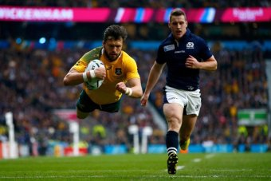

18 October 2015
The Wallabies have emerged from an enthralling Rugby World Cup quarter-final battle as 35-34 winners against a relentless Scotland outfit.
Australia trailed by two points with two minutes remaining but a penalty awarded against the Scots for being offside at the lineout meant Bernard Foley had the opportunity to keep his side alive in the competition, and he duly delivered the three points under intense pressure.
An intercept try to Mark Bennett five minutes from time had put Scotland in a position for a massive boilover, before Foley kicked the Wallabies into a semi-final clash against Argentina at Twickenham next week.
Despite scoring five tries to three, Australia could not shake off the determined Scots, who punished Australia at the set piece and took advantage of the absence of David Pocock to dominate the breakdown.
World Cup hit-man Drew Mitchell notched another two tries for the Wallabies in the win, while Adam Ashley-Cooper, Michael Hooper and Tevita Kuridrani also crossed the line.
Greig Laidlaw accumulated 19 points with the boot for Scotland, with Peter Horne, Tommy Seymour scoring tries before Bennett's late stunner.
Wallabies captain Stephen Moore was full of praise for his opponents' brave efforts after the game.
"I though it was a good Test match. Scotland played really well," he said.
"Their fans should be really proud of the way they played, just as I am of my boys."
Australia coach Michael Cheika waved away suggestions the Wallabies were lucky to be awarded the final penalty, but admitted his side was not at its best.
"They made a great game and we just had to get through it somehow," Cheika said.
"We weren't at our best today but we got the job done. We got five tries and we will enjoy moving on.
"We gave away a try and a charge down and then an intercept and they got one through the ruck.
"That wasn't good and we need to block that area up."
Cheika said his side has plenty of room for improvement.
"I think we were just a little bit flat in the first half in particular," he said.
"In the second half we got ourselves back up a bit more line speed and back into the game."
Australia may have scored three tries to one in the first half, but it is hard to argue Scotland did not deserve its 16-15 lead at the break.
The Scots played with a verve and precision that appeared to catch the Wallabies off guard, while Foley's imprecise goal-kicking also proved a stumbling block.
Laidlaw kicked four from four in the opening term while Foley missed all three of his attempted conversions.
The number two-ranked Wallabies were the firm favourites before the match, and that status seemed to be confirmed in the early going as they mounted a series of assaults on the Scottish line.
Foley almost opened the scoring as he sliced through the defence but, falling just short of the line, he threw an offload that Mitchell put down.
The Wallabies had their five-pointer soon after, however, as Kuridrani crashed through a Seymour tackle then sent Ashley-Cooper over in the corner.
Rather than buckle, Scotland wrestled the momentum away from Australia, earning three points from a penalty then a converted try when Horne picked the ball up from the base of the ruck and cantered over unopposed.
Kurtley Beale, who was excellent coming in for the injured Israel Folau, threw a cut-out pass which set up Drew Mitchell for a touchdown near the corner flag, but the Wallabies still trailed thanks to the boot of Laidlaw.
A rolling maul just before the break saw Hooper find the line, but Foley's third miss of a conversion attempt meant Scotland still held the lead at the break.

A more patient Australia side was better able to accumulate points in the second term, though Scotland still refused to go away.
The Wallabies were on the front foot from the restart, and their task was made easier when Sean Maitland was harshly yellow-carded for a deliberate knock-on.
Moments later, a rolling maul once again resulted in a try, as Will Genia spread the ball wide to Mitchell who crossed for his second.
Scotland drew back to within three points thanks to the boot of Laidlaw, but it looked like Australia would break clear when Ashley-Cooper dived over again — however the try was disallowed when the TMO noticed a Genia knock-on in the build up.
Foley managed to align his sights in the second half and kicked his side to a 25-19 lead, but Scotland was soon back in it.
Finn Russell brilliantly charged down and collected a Foley defensive chip before offloading to the barnstorming Seymour, whose try brought the margin back to one point.
With 15 minutes to go, the Wallabies stole a lineout and were soon over again thanks to the outstretched arm of Kuridrani.
The six-point lead was still not enough, though, as Laidlaw landed another penalty to set the stage for the late drama, as the heavens opened up.
James Slipper almost earned himself World Cup infamy when his pass landed on the chest of Bennett, who raced away for a try, triggering ecstatic celebrations from the Scots as they hit the lead with Laidlaw's conversion going into the home straight.
Foley saved his team-mate a great deal of pain when he coolly slotted his penalty kick from 25 metres out and half-way to the right touchline to earn the Wallabies the narrowest of victories.
Scotland was unhappy the penalty which lost them the game was not referred to the TMO, but replays indicated Jon Welsh was in an offside position when he collected the ball.
The Wallabies, meanwhile, have a great deal to work on if they are to get past an in-form Argentina in next week's semi-final.
They may also be sweating on the fitness of Scott Sio, who left the game in the second half with a shoulder injury.
- 0